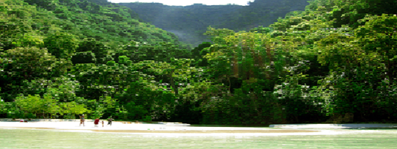
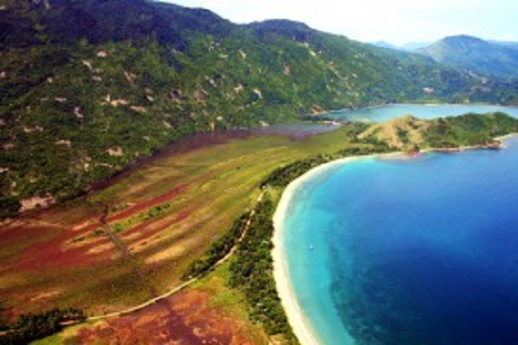
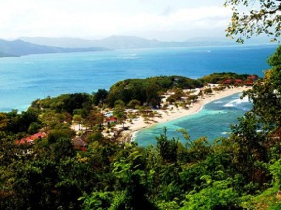
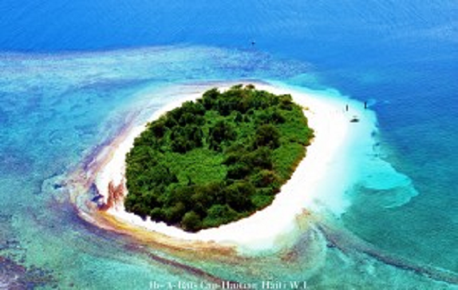
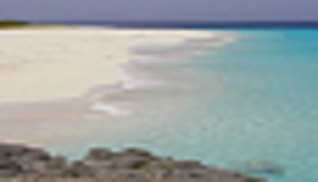

Haiti beaches
This is a placeholder of 3D Flash Slider. Feel free to put in any alternative content here.


Utorok 8. 4. 2014
momentálne neprebieha
žiadne vyučovanie
žiadne vyučovanie
North Haiti
Never get into fights with ugly people, they have nothing to lose.
Dancing is the vertical expression of a horizontal desire justified by music.
Planning is the replacement of an accidental error with a systematic error.
Le commerce est l'art d'extraire de l'argent de la poche d'autrui sans violence
The Island is blessed with an abundant number of beaches. Thanks to the low-level tourism
activity, the region has more unspoiled and gorgeous beaches than most of other islands in the
Caribbean. From spectacular beaches, to secluded islands and exotic islets, this region of the
Island offers plentiful and unique opportunities to all to experience their fantasy.
Most of
these gorgeous beaches offer a wide range of activities, from parasailing to scuba diving.
Here are some of the most popular beaches in North Haiti
CHOUCHOU BAY BEACH
This famous gilded white sand beach is surrounded by an array of lushious mountains. It is located in the historic town of Port Margot less than 15 miles from the city of Cap Haitian.On this piece of paradise, it is you against your imaginations. Not even mother nature can come between you, because it is impenetrable by any hurricanes.
Whether you choose to come by boat, cars or on a horseback, you will find it hard to leave this dream induced paradise. 
LABADIE
This peninsular is about 300 acres and surrounded by exotic tropical plants and flowers.Labadie offers beach lovers at least five different beaches, spectacular rocks formation, different color of sands and textures, and a strong historical background. This piece of jewel is being operated by the world number cruise line ” Royal Caribbean” ILS-A-RAT BEACH
This island was named by Christopher Columbus on his first voyage to the New World. No larger than maybe a city block,however, it is surrounded by beautiful beaches. This dream inducing island is the perfect place to admire the beautiful reefs, coral formations and sea life barely a few yards away.This black sand beach is inarguably among the prettiest in the country. The water is nice and safe, and the area is perfect for camping and family picnic. One of the highlight St Michel Beach is the privately owned beach called ‘’ M&M Beach”. Beautifully gated with nice red stone and conch shell walls, with perfect panoramic views of the ocean, beautiful green mountains and the near by Island of Amiga. 
POINT WEST BEACH
Located in the Island of la tortue or Tortuga Island, point west is among the prettiest beach in the world. The world greatest explorer, Christopher Columbus, named the island. In 1997, Conde Nast ranked point west in the top ten most beautiful beach in the Caribbean.It was featured in several movies like the old pirate of the Caribbean and many more. Point west was once home to some of the most famous pirates in the world. 